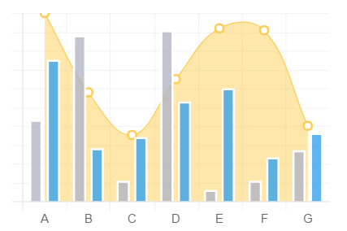

Chart.js
Simple yet flexible JavaScript charting for designers & developers
Get Started
Samples
GitHub
New in 2.0
Mixed chart types
Mix ant match bar and line charts to provide a clear visual distinction between datasets.
